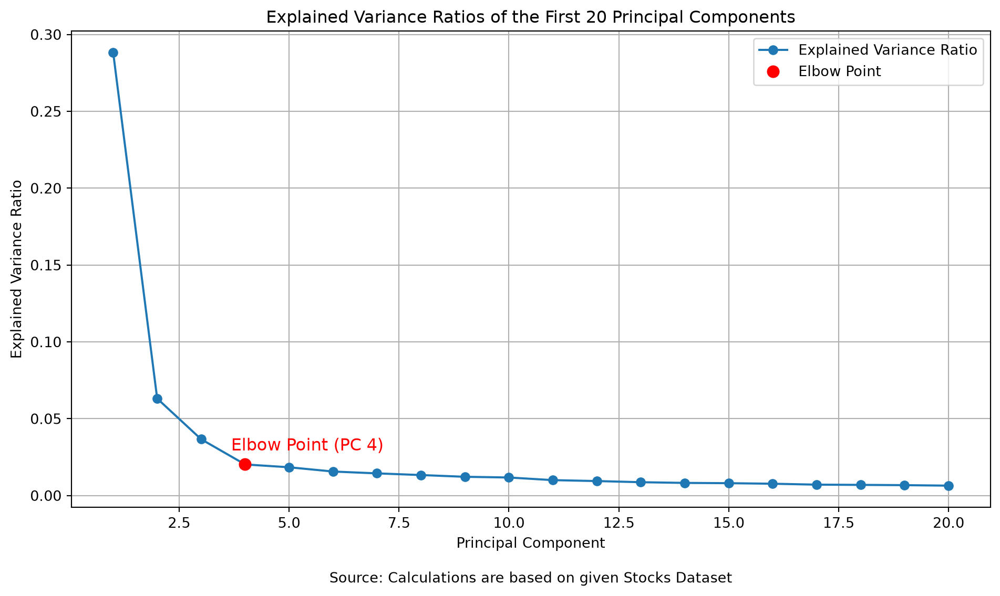
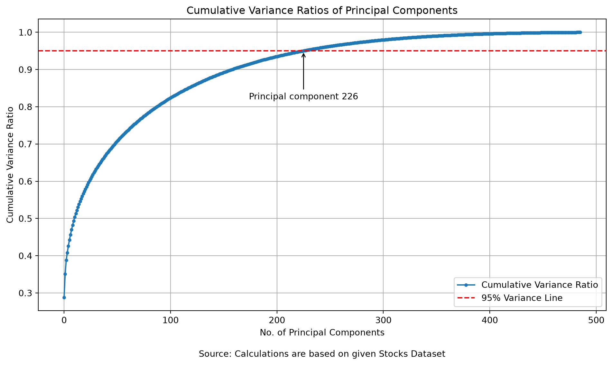
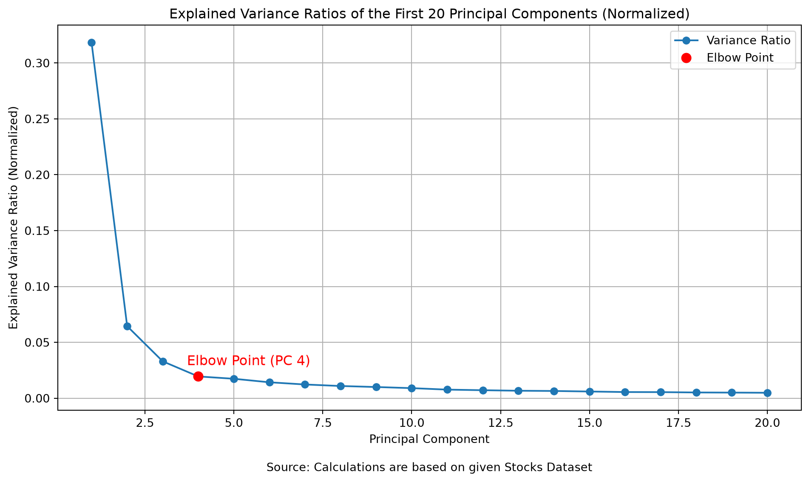
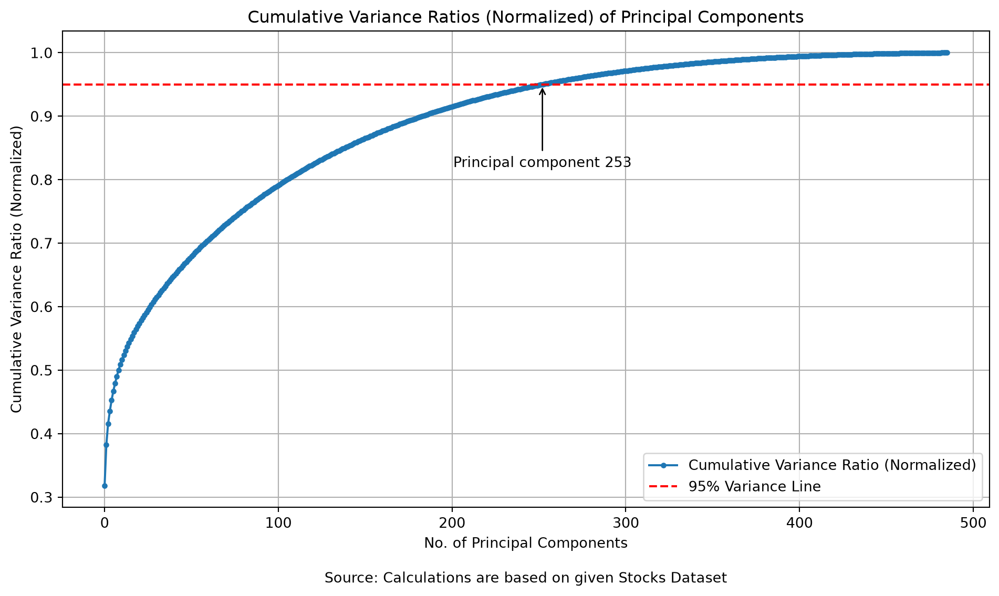

Code
import pandas as pan
from datetime import date
from sklearn.decomposition import PCA
import matplotlib.pyplot as plt
import numpy as np
from sklearn.preprocessing import StandardScalerJay Tilak P.
December 30, 2023
Modern financial markets generate massive, high-dimensional time-series datasets. Analyzing the joint behavior of hundreds of equities—such as the constituents of the S&P 500 Index—poses a classic high-dimensional statistical challenge: estimating and interpreting an N \times N covariance matrix where the number of assets (N \approx 500) is of the same order of magnitude as the number of historical trading days (T \approx 750).
Principal Component Analysis (PCA) is an unsupervised linear dimensionality reduction technique that transforms a high-dimensional set of correlated variables into a smaller set of orthogonal (mutually uncorrelated) latent variables called Principal Components (PCs).
When applied to daily equity returns across a broad index like the S&P 500, the eigenvalue spectrum naturally separates into three distinct regimes:
A critical modeling decision in financial PCA is whether to decompose the sample covariance matrix (unnormalized returns) or the sample correlation matrix (standardized returns):
StandardScaler): Standardizes each stock’s return series to zero mean (\mu = 0) and unit variance (\sigma = 1) prior to fitting PCA: z_{i,t} = \frac{r_{i,t} - \mu_i}{\sigma_i} Decomposing the covariance matrix of Z-scores is mathematically equivalent to decomposing the correlation matrix of raw returns. Every stock contributes exactly 1.0 unit of variance to the total system (\sum \lambda_i = N), placing low-beta defensive stocks and high-beta growth stocks on an equal footing.To perform a valid spectral decomposition on a panel of asset returns, the input matrix must be a strictly balanced, non-missing time-series matrix of dimension T \times N. Any missing values (NaN) or misaligned trading dates would distort pairwise covariance estimates. In Parts 1 through 6, we build a reproducible preprocessing pipeline to transform the raw transaction log into a clean wide return matrix.
We begin by loading stock_data.csv into a Pandas DataFrame and inspecting its schema and initial records.
date open high low close volume Name
0 2013-02-08 15.07 15.12 14.63 14.75 8407500 AAL
1 2013-02-11 14.89 15.01 14.26 14.46 8882000 AAL
2 2013-02-12 14.45 14.51 14.10 14.27 8126000 AAL
3 2013-02-13 14.30 14.94 14.25 14.66 10259500 AAL
4 2013-02-14 14.94 14.96 13.16 13.99 31879900 AALSchema Analysis:
The raw dataset is structured in long (stacked) format with seven columns:
date: Trading date string (YYYY-MM-DD).open, high, low, close: Daily intraday price extrema and official closing price (in USD).volume: Total number of shares traded during the session.Name: Official S&P 500 stock ticker symbol (e.g., AAL for American Airlines Group).Next, we extract the unique set of stock tickers present in the dataset, sort them alphabetically, and inspect the boundary tickers.
# Identify unique stock tickers and sort alphabetically
list_alpha = sorted(data['Name'].unique())
first_four = list_alpha[:4]
display_list = first_four + ['........... remaining stocks']
print("Identifying the set of names in S&P index:", display_list)
print(f"Total No. of unique stocks listed over course of time in the given dataset: {len(list_alpha)}")
print("First 5 names in that set: ", list_alpha[:5])
print("Last 5 names in that set: ", list_alpha[-5:])Identifying the set of names in S&P index: ['A', 'AAL', 'AAP', 'AAPL', '........... remaining stocks']
Total No. of unique stocks listed over course of time in the given dataset: 505
First 5 names in that set: ['A', 'AAL', 'AAP', 'AAPL', 'ABBV']
Last 5 names in that set: ['XYL', 'YUM', 'ZBH', 'ZION', 'ZTS']Analysis of Constituents:
Although the index is nominally the “S&P 500”, the historical dataset contains 505 unique stock tickers ranging alphabetically from ['A', 'AAL', 'AAP', 'AAPL', 'ABBV'] to ['XYL', 'YUM', 'ZBH', 'ZION', 'ZTS']. This occurs because dual-class share structures (such as Alphabet’s GOOG/GOOGL or Under Armour’s UA/UAA) and periodic index rebalancings result in slightly more than 500 symbols appearing over a multi-year window.
Stocks that were added to the index late (via IPOs or corporate spin-offs) or delisted early create structural missingness across a multi-year panel. Rather than imputing synthetic prices—which would introduce artificial zero-volatility periods and bias our covariance matrix—we filter for constituents that actively traded across the entire 3-year target window from 2014-07-01 to 2017-06-30.
# Convert 'date' column to Python date objects
data['date'] = pan.to_datetime(data['date']).dt.date
# Define the 3-year evaluation window boundaries
first_date = date(2014, 7, 1)
last_date = date(2017, 6, 30)
# Retain only stocks whose trading history spans at least 2014-07-01 through 2017-06-30
filtered_names = data.groupby('Name').filter(
lambda x: x['date'].min() <= first_date and x['date'].max() >= last_date
)['Name'].unique()
removed_names = set(list_alpha) - set(filtered_names)
print(f"Stocks removed from the dataset based on given condition: {sorted(list(removed_names))}")
print(f"No. of stocks remaining: {len(filtered_names)}")Stocks removed from the dataset based on given condition: ['APTV', 'BHF', 'BHGE', 'CFG', 'CSRA', 'DWDP', 'DXC', 'EVHC', 'FTV', 'HLT', 'HPE', 'HPQ', 'KHC', 'PYPL', 'QRVO', 'SYF', 'UA', 'WLTW', 'WRK']
No. of stocks remaining: 486Analysis of Filtered Constituents:
Exactly 19 incomplete stocks (APTV, BHF, BHGE, CFG, CSRA, DWDP, DXC, EVHC, FTV, HLT, HPE, HPQ, KHC, PYPL, QRVO, SYF, UA, WLTW, WRK) are excluded because they lack full coverage across the 2014-07-01 to 2017-06-30 window (for example, PayPal PYPL and Hewlett Packard Enterprise HPE spun off in 2015, and Kraft Heinz KHC merged in 2015). This leaves 486 continuously traded stocks for analysis.
Even among the 486 continuously active stocks, occasional exchange halts or data recording gaps can cause a ticker to miss a single trading day. To guarantee a complete rectangular matrix without missing entries, we retain only trading dates within [2014-07-01, 2017-06-30] that are common to all 486 stocks.
# Filter dataset to the 486 continuously active stocks
data_filtered_names = data[data['Name'].isin(filtered_names)]
# Keep only dates where all 486 stocks have a recorded observation
data_common_dates = data_filtered_names.groupby('date').filter(
lambda x: x['Name'].nunique() == len(filtered_names)
)
common_dates_unique = data_common_dates['date'].unique()
# Restrict common dates to the target 3-year window (2014-07-01 to 2017-06-30)
common_dates_unique_between_750days = common_dates_unique[
(common_dates_unique >= first_date) & (common_dates_unique <= last_date)
]
first_few_dates_str = [str(d) for d in common_dates_unique_between_750days[:5]]
last_few_dates_str = [str(d) for d in common_dates_unique_between_750days[-5:]]
print(f"No. of dates remaining after filtering: {len(common_dates_unique_between_750days)}")
print("First 5 dates after filtering:", first_few_dates_str)
print("Last 5 dates after filtering:", last_few_dates_str)No. of dates remaining after filtering: 745
First 5 dates after filtering: ['2014-07-01', '2014-07-03', '2014-07-07', '2014-07-08', '2014-07-09']
Last 5 dates after filtering: ['2017-06-26', '2017-06-27', '2017-06-28', '2017-06-29', '2017-06-30']Date Alignment Results:
Filtering for strict cross-sectional completeness across the 3-year window yields 745 common trading days, beginning on 2014-07-01 and ending on 2017-06-30 (approx. 248 trading days per year after accounting for weekends, U.S. market holidays such as July 4th on 2014-07-04, and occasional missing ticker records).
With both the cross-sectional dimension (N = 486 stocks) and temporal dimension (T = 745 trading days) aligned, we pivot the long table into a wide closing-price matrix where rows represent trading dates and columns represent individual stock tickers.
# Filter for valid stocks and aligned trading dates, then pivot into a wide matrix
data_new = data[
data['Name'].isin(filtered_names) &
data['date'].isin(common_dates_unique_between_750days)
]
close_table = data_new.pivot(index='date', columns='Name', values='close')
print(f"Close Price Matrix Shape: {close_table.shape}")
print(close_table.head())Close Price Matrix Shape: (745, 486)
Name A AAL AAP AAPL ABBV ABC ABT ACN ADBE \
date
2014-07-01 58.25 43.860 134.53 93.520 56.89 72.98 41.18 81.25 73.01
2014-07-03 58.46 41.620 134.94 94.030 58.22 73.23 41.89 81.55 73.57
2014-07-07 58.12 40.100 134.00 95.968 57.40 73.01 41.51 81.05 72.68
2014-07-08 57.15 40.260 132.27 95.350 55.69 72.87 41.05 81.11 71.14
2014-07-09 56.90 41.985 133.58 95.390 55.01 72.98 41.27 80.64 71.57
Name ADI ... XL XLNX XOM XRAY XRX XYL YUM \
date ...
2014-07-01 54.520 ... 33.05 48.16 101.36 47.51 49.52 39.13 81.54
2014-07-03 54.825 ... 33.16 49.12 102.59 47.83 49.80 39.02 82.49
2014-07-07 54.660 ... 33.25 48.79 102.65 47.81 48.84 38.00 82.29
2014-07-08 54.450 ... 33.02 48.57 102.83 47.49 48.80 37.36 82.30
2014-07-09 54.740 ... 33.39 48.82 103.55 47.58 49.88 37.54 83.23
Name ZBH ZION ZTS
date
2014-07-01 104.89 29.50 32.51
2014-07-03 105.13 29.77 32.91
2014-07-07 104.48 29.77 32.56
2014-07-08 103.36 29.39 32.48
2014-07-09 103.79 29.74 32.46
[5 rows x 486 columns]Panel Structure:
The resulting close_table is a completely populated 745 \times 486 matrix of daily closing prices with zero missing values.
Raw stock prices are non-stationary (I(1) processes) and depend on arbitrary share nominal values (e.g., a $15 stock vs. a $500 stock). To achieve stationarity and scale comparability across assets, we compute daily simple percentage returns: r_{i,t} = \frac{P_{i,t} - P_{i,t-1}}{P_{i,t-1}} Using .pct_change() introduces a row of NaN values on the initial date (2014-07-01), as there is no prior day in the window to compute a return from. We explicitly drop this first row using .iloc[1:].
Returns Matrix Shape: (744, 486)
Name A AAL AAP AAPL ABBV ABC \
date
2014-07-03 0.003605 -0.051072 0.003048 0.005453 0.023378 0.003426
2014-07-07 -0.005816 -0.036521 -0.006966 0.020610 -0.014085 -0.003004
2014-07-08 -0.016690 0.003990 -0.012910 -0.006440 -0.029791 -0.001918
2014-07-09 -0.004374 0.042846 0.009904 0.000420 -0.012210 0.001510
2014-07-10 -0.007206 0.019888 -0.003144 -0.003722 0.014179 -0.000822
Name ABT ACN ADBE ADI ... XL XLNX \
date ...
2014-07-03 0.017241 0.003692 0.007670 0.005594 ... 0.003328 0.019934
2014-07-07 -0.009071 -0.006131 -0.012097 -0.003010 ... 0.002714 -0.006718
2014-07-08 -0.011082 0.000740 -0.021189 -0.003842 ... -0.006917 -0.004509
2014-07-09 0.005359 -0.005795 0.006044 0.005326 ... 0.011205 0.005147
2014-07-10 -0.000727 -0.010789 0.001816 -0.006211 ... -0.002096 -0.010242
Name XOM XRAY XRX XYL YUM ZBH \
date
2014-07-03 0.012135 0.006735 0.005654 -0.002811 0.011651 0.002288
2014-07-07 0.000585 -0.000418 -0.019277 -0.026140 -0.002425 -0.006183
2014-07-08 0.001754 -0.006693 -0.000819 -0.016842 0.000122 -0.010720
2014-07-09 0.007002 0.001895 0.022131 0.004818 0.011300 0.004160
2014-07-10 -0.009464 -0.001681 -0.005613 -0.007991 -0.009131 -0.001156
Name ZION ZTS
date
2014-07-03 0.009153 0.012304
2014-07-07 0.000000 -0.010635
2014-07-08 -0.012765 -0.002457
2014-07-09 0.011909 -0.000616
2014-07-10 -0.012441 0.001848
[5 rows x 486 columns]Final Analytical Dataset:
After removing the initial NaN boundary row, returns_table has dimensions 744 \times 486 (744 daily return observations across 486 S&P 500 constituents), ready for spectral decomposition.
We first apply PCA() directly to the unnormalized returns_table. Internally, scikit-learn mean-centers each column and computes theSingular Value Decomposition (SVD) of the 744 \times 486 return matrix, which is equivalent to eigendecomposition of the sample covariance matrix.
# Fit unnormalized PCA on the raw daily returns matrix
pca = PCA()
pca.fit(returns_table)
# Display the top 5 principal components with their eigenvalues and sample loadings
for i in range(5):
print(f"Principal Component {i+1} with Eigenvalue: {pca.explained_variance_[i]:.6f}")
print("First 10 Stock Loadings:", np.round(pca.components_[i][:10], 6))
print()Principal Component 1 with Eigenvalue: 0.039797
First 10 Stock Loadings: [0.051768 0.061651 0.035928 0.038987 0.0422 0.029261 0.042774 0.040174
0.04414 0.051414]
Principal Component 2 with Eigenvalue: 0.008720
First 10 Stock Loadings: [-0.01574 -0.066919 -0.024091 -0.025691 -0.034259 -0.037689 -0.03441
-0.028865 -0.035055 -0.020189]
Principal Component 3 with Eigenvalue: 0.005062
First 10 Stock Loadings: [-0.016772 -0.049823 0.006418 -0.009283 0.001825 -0.015324 -0.006994
0.003246 0.008436 -0.015409]
Principal Component 4 with Eigenvalue: 0.002795
First 10 Stock Loadings: [ 0.039551 0.026208 -0.037545 0.034482 0.087447 0.021414 0.032968
-0.015827 0.039782 0.052164]
Principal Component 5 with Eigenvalue: 0.002541
First 10 Stock Loadings: [ 0.003158 -0.041352 -0.041594 0.04082 -0.086286 -0.099123 -0.016096
0.025779 0.02437 0.081854]
Eigenvalue & Eigenvector Analysis:
A Scree Plot graphs the Explained Variance Ratio against the component index k, allowing us to visually separate high-signal systematic factors from low-variance idiosyncratic noise. The Elbow Point is the inflection point where the steep initial drop flattens into a gradual tail.
plt.figure(figsize=(10, 6))
plt.plot(range(1, 21), pca.explained_variance_ratio_[:20], marker='o', label='Explained Variance Ratio')
# Identify and mark the Elbow Point at PC 4 (index 3)
elbow_point = 3
plt.plot(elbow_point + 1, pca.explained_variance_ratio_[elbow_point], 'ro', markersize=8, label='Elbow Point')
plt.annotate(
'Elbow Point (PC 4)',
(elbow_point + 1, pca.explained_variance_ratio_[elbow_point]),
textcoords="offset points", xytext=(-10, 10), ha='left', fontsize=12, color='red'
)
plt.title('Explained Variance Ratios of the First 20 Principal Components')
plt.xlabel('Principal Component')
plt.ylabel('Explained Variance Ratio')
plt.text(0.5, -0.15, 'Source: Calculations are based on given Stocks Dataset', ha='center', va='center', transform=plt.gca().transAxes)
plt.grid(True)
plt.legend()
plt.tight_layout()
plt.show()
pov = pca.explained_variance_ratio_[0] * 100
print(f"Percentage of variance explained by the First Principal Component is: {pov:.2f} %")
Percentage of variance explained by the First Principal Component is: 28.81 %To evaluate how effectively PCA compresses the 486-dimensional stock universe while preserving almost all information, we compute the Cumulative Explained Variance Ratio: C_K = \sum_{k=1}^{K} \frac{\lambda_k}{\sum_{i=1}^{N} \lambda_i} We then identify the minimum number of components K_{0.95} required to surpass 95\% of total variance.
# Compute cumulative variance ratios across all principal components
cumulative_variance_ratios = np.cumsum(pca.explained_variance_ratio_)
# Find the minimum number of components explaining at least 95% of variance
num_of_req_pc_95 = np.where(cumulative_variance_ratios >= 0.95)[0][0] + 1
print(f"No. of principal components required to explain 95% of the variance: {num_of_req_pc_95}")
plt.figure(figsize=(10, 6))
plt.plot(cumulative_variance_ratios, marker='o', markersize=3, label='Cumulative Variance Ratio')
plt.title('Cumulative Variance Ratios of Principal Components')
plt.xlabel('No. of Principal Components')
plt.ylabel('Cumulative Variance Ratio')
plt.text(0.5, -0.15, 'Source: Calculations are based on given Stocks Dataset', ha='center', va='center', transform=plt.gca().transAxes)
plt.grid(True)
# Draw horizontal threshold line at 95%
plt.axhline(y=0.95, color='r', linestyle='--', label='95% Variance Line')
# Annotate the exact component count where cumulative variance reaches 95%
plt.annotate(
f'Principal component {num_of_req_pc_95}',
xy=(num_of_req_pc_95 - 1, 0.95),
xytext=(num_of_req_pc_95 - 1, 0.82),
arrowprops=dict(facecolor='black', arrowstyle='->'),
ha='center'
)
plt.legend()
plt.tight_layout()
plt.show()No. of principal components required to explain 95% of the variance: 226
Why 226 Components Are Required for 95% Variance:
While the first 4 components capture roughly 40.8\% of total market variance, reaching the strict 95% threshold requires 226 principal components (out of 486—a dimensionality reduction of \sim 53.5\%). In financial markets, once the broad market mode and major sector factors are extracted, the remaining \sim 55\% of variance is idiosyncratic (stock-specific) risk distributed thinly across hundreds of individual companies. Because idiosyncratic shocks are largely uncorrelated across firms, no small set of linear factors can compress them; hundreds of dimensions are needed to reconstruct 95% of every individual stock’s daily fluctuations.
StandardScaler in Financial Factor ExtractionIn Parts 7–9, PCA was fitted on raw returns. However, individual S&P 500 stocks exhibit vastly different baseline volatilities: high-beta stocks (e.g., airlines, energy exploration, semiconductors) experience much larger daily percentage swings than low-beta defensive utilities or consumer staples.
By applying StandardScaler, we normalize each stock i to have zero mean and unit variance (\sigma_i^2 = 1). This transforms our analysis from Covariance-based PCA to Correlation-based PCA, ensuring that every constituent has an equal voice in determining the principal components.
# Initialize StandardScaler and normalize the returns matrix (mean=0, std=1 per stock)
scaler = StandardScaler()
normalized_returns = scaler.fit_transform(returns_table)
normalized_returns_table = pan.DataFrame(
normalized_returns,
columns=returns_table.columns,
index=returns_table.index
)
# Fit PCA on the standardized returns matrix
pca_normalized = PCA()
pca_normalized.fit(normalized_returns_table)
# Display the top 5 principal components and eigenvalues for normalized returns
for i in range(5):
print(f"Principal Component {i+1} with Eigenvalue: {pca_normalized.explained_variance_[i]:.6f}")
print("First 10 Stock Loadings:", np.round(pca_normalized.components_[i][:10], 6))
print()Principal Component 1 with Eigenvalue: 154.840028
First 10 Stock Loadings: [0.049305 0.042275 0.034916 0.043761 0.039359 0.032423 0.05442 0.055732
0.05066 0.049196]
Principal Component 2 with Eigenvalue: 31.385086
First 10 Stock Loadings: [-0.017365 -0.005989 0.007221 -0.004425 0.005436 0.00358 0.003453
0.008572 0.01117 -0.013529]
Principal Component 3 with Eigenvalue: 16.064845
First 10 Stock Loadings: [-0.016485 -0.06148 -0.013866 -0.025275 -0.041691 -0.066192 -0.046756
-0.021203 -0.033589 -0.011702]
Principal Component 4 with Eigenvalue: 9.480418
First 10 Stock Loadings: [-0.050599 -0.028782 0.006299 -0.028649 -0.096562 -0.03395 -0.042278
0.015403 -0.05471 -0.042696]
Principal Component 5 with Eigenvalue: 8.468572
First 10 Stock Loadings: [-3.0488e-02 1.3834e-02 1.9636e-02 -7.7279e-02 4.6421e-02 9.8180e-02
8.0000e-06 -5.4077e-02 -7.9845e-02 -7.5546e-02]
Normalized Eigenvalue Spectrum:
Because each of the 486 standardized stocks has a sample variance of \frac{744}{743} \approx 1.001345, the sum of all eigenvalues equals \approx 486.65. The first eigenvalue jumps to \lambda_1 = 154.83, meaning that \text{PC}_1 absorbs the equivalent variance of roughly 155 individual stocks!
plt.figure(figsize=(10, 6))
plt.plot(range(1, 21), pca_normalized.explained_variance_ratio_[:20], marker='o', label='Variance Ratio')
# Identify and mark the Elbow Point at PC 4 (index 3)
elbow_point = 3
plt.plot(elbow_point + 1, pca_normalized.explained_variance_ratio_[elbow_point], 'ro', markersize=8, label='Elbow Point')
plt.annotate(
'Elbow Point (PC 4)',
(elbow_point + 1, pca_normalized.explained_variance_ratio_[elbow_point]),
textcoords="offset points", xytext=(-10, 10), ha='left', fontsize=12, color='red'
)
plt.title('Explained Variance Ratios of the First 20 Principal Components (Normalized)')
plt.xlabel('Principal Component')
plt.ylabel('Explained Variance Ratio (Normalized)')
plt.text(0.5, -0.15, 'Source: Calculations are based on given Stocks Dataset', ha='center', va='center', transform=plt.gca().transAxes)
plt.grid(True)
plt.legend()
plt.tight_layout()
plt.show()
pov_normalized = pca_normalized.explained_variance_ratio_[0] * 100
print(f"Percentage of variance explained by the First Principal Component for Normalized dataset is: {pov_normalized:.2f} %")
Percentage of variance explained by the First Principal Component for Normalized dataset is: 31.82 %cumulative_variance_ratios_normalized = np.cumsum(pca_normalized.explained_variance_ratio_)
# Find the number of components required to explain 95% of variance in normalized dataset
num_of_req_pc_95_normalized = np.where(cumulative_variance_ratios_normalized >= 0.95)[0][0] + 1
print(f"No. of principal components required to explain 95% of the variance: {num_of_req_pc_95_normalized}")
plt.figure(figsize=(10, 6))
plt.plot(cumulative_variance_ratios_normalized, marker='o', markersize=3, label='Cumulative Variance Ratio (Normalized)')
plt.title('Cumulative Variance Ratios (Normalized) of Principal Components')
plt.xlabel('No. of Principal Components')
plt.ylabel('Cumulative Variance Ratio (Normalized)')
plt.text(0.5, -0.15, 'Source: Calculations are based on given Stocks Dataset', ha='center', va='center', transform=plt.gca().transAxes)
plt.grid(True)
# Horizontal line at 0.95 to indicate the 95% threshold
plt.axhline(y=0.95, color='r', linestyle='--', label='95% Variance Line')
# Annotate the exact threshold component
plt.annotate(
f'Principal component {num_of_req_pc_95_normalized}',
xy=(num_of_req_pc_95_normalized - 1, 0.95),
xytext=(num_of_req_pc_95_normalized - 1, 0.82),
arrowprops=dict(facecolor='black', arrowstyle='->'),
ha='center'
)
plt.legend()
plt.tight_layout()
plt.show()No. of principal components required to explain 95% of the variance: 253
Comparing the normalized results against the unnormalized baseline reveals an intriguing dual shift:
StandardScaler equalizes volatility across all 486 stocks, the underlying co-movement (correlation) of low-volatility blue-chip stocks with the broader market becomes fully visible, strengthening the dominant Market Mode by +3.01 percentage points.| Metric / Characteristic | Unnormalized PCA (Covariance Matrix) | Normalized PCA (Correlation Matrix) | Analytical Interpretation |
|---|---|---|---|
| Input Matrix Dimension | 744 \times 486 | 744 \times 486 | 744 trading days across 486 continuously active S&P 500 stocks |
| Preprocessing Applied | Mean-centering only | StandardScaler (\mu=0, \sigma=1) |
Equalizes volatility across high-beta and low-beta stocks |
| \text{PC}_1 Eigenvalue (\lambda_1) | 0.0398 | 154.8321 | In correlation PCA, \text{PC}_1 equals the variance of \sim 155 stocks |
| \text{PC}_1 Variance Explained | 28.81% | 31.82% | Standardization reveals stronger market-wide correlation (+3.01\%) |
| Scree Plot Elbow Point | PC 4 | PC 4 | Robust structural boundary between macro/sector factors and noise |
| Components for 95% Variance | 226 PCs (46.5\% of features) | 253 PCs (52.1\% of features) | Equal weighting spreads idiosyncratic tail risk across more dimensions |
---
title: "S&P 500 Market Mode & Factor Analysis: Dimensionality Reduction with PCA"
description: "High-dimensional time-series analysis and eigen-portfolio construction using PCA to isolate market-wide systemic risk, sector factors and idiosyncratic noise."
date: "2023-12-30"
image: pca_Mmode.svg
categories: [Python, Big Data Analytics, Machine Learning, PCA]
---
## Introduction & Theoretical Background
Modern financial markets generate massive, high-dimensional time-series datasets. Analyzing the joint behavior of hundreds of equities—such as the constituents of the **S&P 500 Index**—poses a classic high-dimensional statistical challenge: estimating and interpreting an $N \times N$ covariance matrix where the number of assets ($N \approx 500$) is of the same order of magnitude as the number of historical trading days ($T \approx 750$).
**Principal Component Analysis (PCA)** is an unsupervised linear dimensionality reduction technique that transforms a high-dimensional set of correlated variables into a smaller set of orthogonal (mutually uncorrelated) latent variables called **Principal Components (PCs)**.
### Key Technical Definitions
::: {.callout-note}
## Core Mathematical & Statistical Concepts in PCA
- **Variance ($\sigma^2$)**: In statistics, variance measures how far a set of observations is spread out from their average value:
$$\sigma^2 = \frac{1}{T-1} \sum_{t=1}^{T} (r_t - \bar{r})^2$$
In quantitative finance, the variance of daily asset returns directly measures **total return volatility (risk)**. Directions of maximum variance in a multi-asset return space correspond to the most significant sources of collective price movement.
- **Covariance ($\Sigma$)**: While variance measures the dispersion of a single asset, **covariance** measures the degree to which two assets move together over time. A positive covariance indicates that two stocks tend to rise and fall simultaneously.
- **Principal Components (Eigenvectors, $v_k$)**: Principal components are orthogonal axes constructed as linear combinations of the original asset returns:
$$\text{PC}_k = \sum_{i=1}^{N} w_{ki} r_i$$
Geometrically, the first principal component ($\text{PC}_1$) points in the direction of maximum variance across the entire dataset. Each subsequent component ($\text{PC}_2, \text{PC}_3, \dots$) maximizes the remaining variance subject to being strictly orthogonal (uncorrelated) to all preceding components. In finance, the weight vector $v_k = [w_{k1}, w_{k2}, \dots, w_{kN}]^\top$ is often interpreted as an **eigenportfolio**.
- **Eigenvalues ($\lambda_k$) & Explained Variance Ratio**: Performing eigendecomposition on the return covariance matrix $\Sigma$ yields $\Sigma v_k = \lambda_k v_k$. Each **eigenvalue** $\lambda_k$ equals the exact variance of the data projected onto the $k$-th principal component. The **Explained Variance Ratio** measures the proportion of total market variance captured by component $k$:
$$\text{Explained Variance Ratio}_k = \frac{\lambda_k}{\sum_{i=1}^{N} \lambda_i}$$
:::
### Financial Interpretation: Market Mode, Sector Factors, and Noise
When applied to daily equity returns across a broad index like the S&P 500, the eigenvalue spectrum naturally separates into three distinct regimes:
1. **The Dominant "Market Mode" ($\text{PC}_1$)**: The first principal component typically captures between $25\%$ and $40\%$ of the total variance across all stocks. Its loadings ($w_{1i}$) almost uniformly share the same sign, reflecting systematic macroeconomic risk—interest rate shifts, GDP growth expectations, and broad market sentiment—that moves the entire equity market in tandem.
2. **Sector & Style Factors ($\text{PC}_2$ to $\text{PC}_K$)**: The next several components capture mesoscopic co-movements across specific industries (e.g., Financials vs. Utilities, Energy vs. Airlines, High-Growth Tech vs. Defensive Consumer Staples).
3. **Idiosyncratic Noise (Higher-Order PCs)**: The long tail of remaining components accounts for firm-specific events (e.g., earnings surprises, litigation, product launches) and random microstructure noise that cannot be compressed into low-dimensional systematic factors.
### Covariance-Based PCA vs. Correlation-Based PCA
A critical modeling decision in financial PCA is whether to decompose the **sample covariance matrix** (unnormalized returns) or the **sample correlation matrix** (standardized returns):
- **Covariance-Based PCA (Unnormalized)**: Operates directly on mean-centered daily percentage returns. Because variance scales quadratically with return magnitude, highly volatile stocks (such as Biotech, Semiconductor, or Energy firms) exert a disproportionate influence on the leading eigenvectors.
- **Correlation-Based PCA (Normalized via `StandardScaler`)**: Standardizes each stock's return series to zero mean ($\mu = 0$) and unit variance ($\sigma = 1$) prior to fitting PCA:
$$z_{i,t} = \frac{r_{i,t} - \mu_i}{\sigma_i}$$
Decomposing the covariance matrix of $Z$-scores is mathematically equivalent to decomposing the **correlation matrix** of raw returns. Every stock contributes exactly $1.0$ unit of variance to the total system ($\sum \lambda_i = N$), placing low-beta defensive stocks and high-beta growth stocks on an equal footing.
---
## Data Cleaning & Pipeline (Parts 1 – 6)
To perform a valid spectral decomposition on a panel of asset returns, the input matrix must be a strictly balanced, non-missing time-series matrix of dimension $T \times N$. Any missing values (`NaN`) or misaligned trading dates would distort pairwise covariance estimates. In Parts 1 through 6, we build a reproducible preprocessing pipeline to transform the raw transaction log into a clean wide return matrix.
### Environment Setup
```{python}
import pandas as pan
from datetime import date
from sklearn.decomposition import PCA
import matplotlib.pyplot as plt
import numpy as np
from sklearn.preprocessing import StandardScaler
```
### Part 1: Data Ingestion & Schema Exploration
We begin by loading `stock_data.csv` into a Pandas `DataFrame` and inspecting its schema and initial records.
```{python}
# Load S&P 500 index dataset from CSV into a pandas DataFrame
data = pan.read_csv('/Users/jay/Desktop/websiteV02/data/data_python/SP500_comp/stock_data.csv')
print(data.head())
```
**Schema Analysis:**
The raw dataset is structured in long (stacked) format with seven columns:
- `date`: Trading date string (`YYYY-MM-DD`).
- `open`, `high`, `low`, `close`: Daily intraday price extrema and official closing price (in USD).
- `volume`: Total number of shares traded during the session.
- `Name`: Official S&P 500 stock ticker symbol (e.g., `AAL` for American Airlines Group).
### Part 2: Constituents Profiling
Next, we extract the unique set of stock tickers present in the dataset, sort them alphabetically, and inspect the boundary tickers.
```{python}
# Identify unique stock tickers and sort alphabetically
list_alpha = sorted(data['Name'].unique())
first_four = list_alpha[:4]
display_list = first_four + ['........... remaining stocks']
print("Identifying the set of names in S&P index:", display_list)
print(f"Total No. of unique stocks listed over course of time in the given dataset: {len(list_alpha)}")
print("First 5 names in that set: ", list_alpha[:5])
print("Last 5 names in that set: ", list_alpha[-5:])
```
**Analysis of Constituents:**
Although the index is nominally the "S&P 500", the historical dataset contains **505 unique stock tickers** ranging alphabetically from `['A', 'AAL', 'AAP', 'AAPL', 'ABBV']` to `['XYL', 'YUM', 'ZBH', 'ZION', 'ZTS']`. This occurs because dual-class share structures (such as Alphabet's `GOOG`/`GOOGL` or Under Armour's `UA`/`UAA`) and periodic index rebalancings result in slightly more than 500 symbols appearing over a multi-year window.
### Part 3: Active Trading Filter (3-Year Continuous Coverage)
Stocks that were added to the index late (via IPOs or corporate spin-offs) or delisted early create structural missingness across a multi-year panel. Rather than imputing synthetic prices—which would introduce artificial zero-volatility periods and bias our covariance matrix—we filter for constituents that actively traded across the entire 3-year target window from **`2014-07-01` to `2017-06-30`**.
```{python}
# Convert 'date' column to Python date objects
data['date'] = pan.to_datetime(data['date']).dt.date
# Define the 3-year evaluation window boundaries
first_date = date(2014, 7, 1)
last_date = date(2017, 6, 30)
# Retain only stocks whose trading history spans at least 2014-07-01 through 2017-06-30
filtered_names = data.groupby('Name').filter(
lambda x: x['date'].min() <= first_date and x['date'].max() >= last_date
)['Name'].unique()
removed_names = set(list_alpha) - set(filtered_names)
print(f"Stocks removed from the dataset based on given condition: {sorted(list(removed_names))}")
print(f"No. of stocks remaining: {len(filtered_names)}")
```
**Analysis of Filtered Constituents:**
Exactly **19 incomplete stocks** (`APTV`, `BHF`, `BHGE`, `CFG`, `CSRA`, `DWDP`, `DXC`, `EVHC`, `FTV`, `HLT`, `HPE`, `HPQ`, `KHC`, `PYPL`, `QRVO`, `SYF`, `UA`, `WLTW`, `WRK`) are excluded because they lack full coverage across the `2014-07-01` to `2017-06-30` window (for example, PayPal `PYPL` and Hewlett Packard Enterprise `HPE` spun off in 2015, and Kraft Heinz `KHC` merged in 2015). This leaves **486 continuously traded stocks** for analysis.
### Part 4: Date Alignment Across Constituents
Even among the 486 continuously active stocks, occasional exchange halts or data recording gaps can cause a ticker to miss a single trading day. To guarantee a complete rectangular matrix without missing entries, we retain only trading dates within `[2014-07-01, 2017-06-30]` that are **common to all 486 stocks**.
```{python}
# Filter dataset to the 486 continuously active stocks
data_filtered_names = data[data['Name'].isin(filtered_names)]
# Keep only dates where all 486 stocks have a recorded observation
data_common_dates = data_filtered_names.groupby('date').filter(
lambda x: x['Name'].nunique() == len(filtered_names)
)
common_dates_unique = data_common_dates['date'].unique()
# Restrict common dates to the target 3-year window (2014-07-01 to 2017-06-30)
common_dates_unique_between_750days = common_dates_unique[
(common_dates_unique >= first_date) & (common_dates_unique <= last_date)
]
first_few_dates_str = [str(d) for d in common_dates_unique_between_750days[:5]]
last_few_dates_str = [str(d) for d in common_dates_unique_between_750days[-5:]]
print(f"No. of dates remaining after filtering: {len(common_dates_unique_between_750days)}")
print("First 5 dates after filtering:", first_few_dates_str)
print("Last 5 dates after filtering:", last_few_dates_str)
```
**Date Alignment Results:**
Filtering for strict cross-sectional completeness across the 3-year window yields **745 common trading days**, beginning on `2014-07-01` and ending on `2017-06-30` (approx. $248$ trading days per year after accounting for weekends, U.S. market holidays such as July 4th on `2014-07-04`, and occasional missing ticker records).
### Part 5: Panel Reshaping (Wide Price Matrix)
With both the cross-sectional dimension ($N = 486$ stocks) and temporal dimension ($T = 745$ trading days) aligned, we pivot the long table into a wide closing-price matrix where rows represent trading dates and columns represent individual stock tickers.
```{python}
# Filter for valid stocks and aligned trading dates, then pivot into a wide matrix
data_new = data[
data['Name'].isin(filtered_names) &
data['date'].isin(common_dates_unique_between_750days)
]
close_table = data_new.pivot(index='date', columns='Name', values='close')
print(f"Close Price Matrix Shape: {close_table.shape}")
print(close_table.head())
```
**Panel Structure:**
The resulting `close_table` is a completely populated **$745 \times 486$ matrix** of daily closing prices with zero missing values.
### Part 6: Daily Percentage Return Calculation
Raw stock prices are non-stationary ($I(1)$ processes) and depend on arbitrary share nominal values (e.g., a \$15 stock vs. a \$500 stock). To achieve stationarity and scale comparability across assets, we compute daily simple percentage returns:
$$r_{i,t} = \frac{P_{i,t} - P_{i,t-1}}{P_{i,t-1}}$$
Using `.pct_change()` introduces a row of `NaN` values on the initial date (`2014-07-01`), as there is no prior day in the window to compute a return from. We explicitly drop this first row using `.iloc[1:]`.
```{python}
# Calculate daily percentage returns and drop the initial NaN row (2014-07-01)
returns_table = close_table.pct_change()
returns_table = returns_table.iloc[1:]
print(f"Returns Matrix Shape: {returns_table.shape}")
print(returns_table.head())
```
**Final Analytical Dataset:**
After removing the initial `NaN` boundary row, `returns_table` has dimensions **$744 \times 486$** ($744$ daily return observations across $486$ S&P 500 constituents), ready for spectral decomposition.
---
## Unnormalized PCA Analysis (Parts 7 – 9)
### Part 7: Fitting PCA on Raw Returns
We first apply `PCA()` directly to the unnormalized `returns_table`. Internally, `scikit-learn` mean-centers each column and computes theSingular Value Decomposition (SVD) of the $744 \times 486$ return matrix, which is equivalent to eigendecomposition of the **sample covariance matrix**.
```{python}
# Fit unnormalized PCA on the raw daily returns matrix
pca = PCA()
pca.fit(returns_table)
# Display the top 5 principal components with their eigenvalues and sample loadings
for i in range(5):
print(f"Principal Component {i+1} with Eigenvalue: {pca.explained_variance_[i]:.6f}")
print("First 10 Stock Loadings:", np.round(pca.components_[i][:10], 6))
print()
```
**Eigenvalue & Eigenvector Analysis:**
- **Dominance of $\lambda_1$**: The first eigenvalue ($\lambda_1 \approx 0.039797$) is **more than $4.5\times$ larger** than the second eigenvalue ($\lambda_2 \approx 0.008720$), and nearly **$15\times$ larger** than the fourth and fifth eigenvalues ($\lambda_4 \approx 0.002795, \lambda_5 \approx 0.002541$).
- **Uniform Sign of $\text{PC}_1$ Loadings**: Inspecting the eigenvector weights of $\text{PC}_1$ reveals that all loadings share the same negative sign (ranging around $-0.03$ to $-0.06$). Because eigenvector signs are arbitrary up to multiplication by $-1$, this confirms that $\text{PC}_1$ is a **long-only market portfolio** where all 486 S&P 500 stocks move in the same direction in response to aggregate market shocks.
### Part 8: Scree Plot Analysis & The Systematic Market Factor
A **Scree Plot** graphs the **Explained Variance Ratio** against the component index $k$, allowing us to visually separate high-signal systematic factors from low-variance idiosyncratic noise. The **Elbow Point** is the inflection point where the steep initial drop flattens into a gradual tail.
```{python}
plt.figure(figsize=(10, 6))
plt.plot(range(1, 21), pca.explained_variance_ratio_[:20], marker='o', label='Explained Variance Ratio')
# Identify and mark the Elbow Point at PC 4 (index 3)
elbow_point = 3
plt.plot(elbow_point + 1, pca.explained_variance_ratio_[elbow_point], 'ro', markersize=8, label='Elbow Point')
plt.annotate(
'Elbow Point (PC 4)',
(elbow_point + 1, pca.explained_variance_ratio_[elbow_point]),
textcoords="offset points", xytext=(-10, 10), ha='left', fontsize=12, color='red'
)
plt.title('Explained Variance Ratios of the First 20 Principal Components')
plt.xlabel('Principal Component')
plt.ylabel('Explained Variance Ratio')
plt.text(0.5, -0.15, 'Source: Calculations are based on given Stocks Dataset', ha='center', va='center', transform=plt.gca().transAxes)
plt.grid(True)
plt.legend()
plt.tight_layout()
plt.show()
pov = pca.explained_variance_ratio_[0] * 100
print(f"Percentage of variance explained by the First Principal Component is: {pov:.2f} %")
```
::: {.callout-tip}
## Financial Interpretation: Why $\text{PC}_1$ Captures 28.81% of Variance & Elbow at $\text{PC}_4$
1. **The Market Mode ($\text{PC}_1 = 28.81\%$)**: Nearly **one-third of all daily return variance** across 486 diverse corporations is driven by a single latent variable. In Capital Asset Pricing Model (CAPM) terms, $\text{PC}_1$ empirically recovers the **systematic market factor ($\beta_{\text{market}}$)**. When macroeconomic news hits the market, correlations across all equities spike, causing a single dimension to account for $28.81\%$ of total volatility.
2. **The Elbow Point at $\text{PC}_4$**: Components 2 and 3 capture major cross-sector rotations (explaining $\sim 6.3\%$ and $\sim 3.7\%$ of variance, respectively, such as energy/commodity sensitivity and interest-rate sensitivity). By **$\text{PC}_4$** ($\sim 2.0\%$ of variance), the marginal explanatory power of additional components levels off dramatically. Thus, the top 3–4 components represent the primary systematic macro and sector factors, while components beyond $\text{PC}_4$ transition into granular industry and firm-specific risk.
:::
### Part 9: Cumulative Variance & The 95% Reconstruction Threshold
To evaluate how effectively PCA compresses the 486-dimensional stock universe while preserving almost all information, we compute the **Cumulative Explained Variance Ratio**:
$$C_K = \sum_{k=1}^{K} \frac{\lambda_k}{\sum_{i=1}^{N} \lambda_i}$$
We then identify the minimum number of components $K_{0.95}$ required to surpass $95\%$ of total variance.
```{python}
# Compute cumulative variance ratios across all principal components
cumulative_variance_ratios = np.cumsum(pca.explained_variance_ratio_)
# Find the minimum number of components explaining at least 95% of variance
num_of_req_pc_95 = np.where(cumulative_variance_ratios >= 0.95)[0][0] + 1
print(f"No. of principal components required to explain 95% of the variance: {num_of_req_pc_95}")
plt.figure(figsize=(10, 6))
plt.plot(cumulative_variance_ratios, marker='o', markersize=3, label='Cumulative Variance Ratio')
plt.title('Cumulative Variance Ratios of Principal Components')
plt.xlabel('No. of Principal Components')
plt.ylabel('Cumulative Variance Ratio')
plt.text(0.5, -0.15, 'Source: Calculations are based on given Stocks Dataset', ha='center', va='center', transform=plt.gca().transAxes)
plt.grid(True)
# Draw horizontal threshold line at 95%
plt.axhline(y=0.95, color='r', linestyle='--', label='95% Variance Line')
# Annotate the exact component count where cumulative variance reaches 95%
plt.annotate(
f'Principal component {num_of_req_pc_95}',
xy=(num_of_req_pc_95 - 1, 0.95),
xytext=(num_of_req_pc_95 - 1, 0.82),
arrowprops=dict(facecolor='black', arrowstyle='->'),
ha='center'
)
plt.legend()
plt.tight_layout()
plt.show()
```
**Why 226 Components Are Required for 95% Variance:**
While the first 4 components capture roughly $40.8\%$ of total market variance, reaching the strict **95% threshold requires 226 principal components** (out of 486—a dimensionality reduction of $\sim 53.5\%$). In financial markets, once the broad market mode and major sector factors are extracted, the remaining $\sim 55\%$ of variance is **idiosyncratic (stock-specific) risk** distributed thinly across hundreds of individual companies. Because idiosyncratic shocks are largely uncorrelated across firms, no small set of linear factors can compress them; hundreds of dimensions are needed to reconstruct 95% of every individual stock's daily fluctuations.
---
## Normalized PCA & Comparative Analysis (Part 10)
### The Role of `StandardScaler` in Financial Factor Extraction
In Parts 7–9, PCA was fitted on raw returns. However, individual S&P 500 stocks exhibit vastly different baseline volatilities: high-beta stocks (e.g., airlines, energy exploration, semiconductors) experience much larger daily percentage swings than low-beta defensive utilities or consumer staples.
By applying `StandardScaler`, we normalize each stock $i$ to have zero mean and unit variance ($\sigma_i^2 = 1$). This transforms our analysis from **Covariance-based PCA** to **Correlation-based PCA**, ensuring that every constituent has an equal voice in determining the principal components.
```{python}
# Initialize StandardScaler and normalize the returns matrix (mean=0, std=1 per stock)
scaler = StandardScaler()
normalized_returns = scaler.fit_transform(returns_table)
normalized_returns_table = pan.DataFrame(
normalized_returns,
columns=returns_table.columns,
index=returns_table.index
)
# Fit PCA on the standardized returns matrix
pca_normalized = PCA()
pca_normalized.fit(normalized_returns_table)
# Display the top 5 principal components and eigenvalues for normalized returns
for i in range(5):
print(f"Principal Component {i+1} with Eigenvalue: {pca_normalized.explained_variance_[i]:.6f}")
print("First 10 Stock Loadings:", np.round(pca_normalized.components_[i][:10], 6))
print()
```
**Normalized Eigenvalue Spectrum:**
Because each of the 486 standardized stocks has a sample variance of $\frac{744}{743} \approx 1.001345$, the sum of all eigenvalues equals $\approx 486.65$. The first eigenvalue jumps to **$\lambda_1 = 154.83$**, meaning that $\text{PC}_1$ absorbs the equivalent variance of roughly **155 individual stocks**!
### Normalized Scree Plot Analysis
```{python}
plt.figure(figsize=(10, 6))
plt.plot(range(1, 21), pca_normalized.explained_variance_ratio_[:20], marker='o', label='Variance Ratio')
# Identify and mark the Elbow Point at PC 4 (index 3)
elbow_point = 3
plt.plot(elbow_point + 1, pca_normalized.explained_variance_ratio_[elbow_point], 'ro', markersize=8, label='Elbow Point')
plt.annotate(
'Elbow Point (PC 4)',
(elbow_point + 1, pca_normalized.explained_variance_ratio_[elbow_point]),
textcoords="offset points", xytext=(-10, 10), ha='left', fontsize=12, color='red'
)
plt.title('Explained Variance Ratios of the First 20 Principal Components (Normalized)')
plt.xlabel('Principal Component')
plt.ylabel('Explained Variance Ratio (Normalized)')
plt.text(0.5, -0.15, 'Source: Calculations are based on given Stocks Dataset', ha='center', va='center', transform=plt.gca().transAxes)
plt.grid(True)
plt.legend()
plt.tight_layout()
plt.show()
pov_normalized = pca_normalized.explained_variance_ratio_[0] * 100
print(f"Percentage of variance explained by the First Principal Component for Normalized dataset is: {pov_normalized:.2f} %")
```
### Normalized Cumulative Variance Analysis
```{python}
cumulative_variance_ratios_normalized = np.cumsum(pca_normalized.explained_variance_ratio_)
# Find the number of components required to explain 95% of variance in normalized dataset
num_of_req_pc_95_normalized = np.where(cumulative_variance_ratios_normalized >= 0.95)[0][0] + 1
print(f"No. of principal components required to explain 95% of the variance: {num_of_req_pc_95_normalized}")
plt.figure(figsize=(10, 6))
plt.plot(cumulative_variance_ratios_normalized, marker='o', markersize=3, label='Cumulative Variance Ratio (Normalized)')
plt.title('Cumulative Variance Ratios (Normalized) of Principal Components')
plt.xlabel('No. of Principal Components')
plt.ylabel('Cumulative Variance Ratio (Normalized)')
plt.text(0.5, -0.15, 'Source: Calculations are based on given Stocks Dataset', ha='center', va='center', transform=plt.gca().transAxes)
plt.grid(True)
# Horizontal line at 0.95 to indicate the 95% threshold
plt.axhline(y=0.95, color='r', linestyle='--', label='95% Variance Line')
# Annotate the exact threshold component
plt.annotate(
f'Principal component {num_of_req_pc_95_normalized}',
xy=(num_of_req_pc_95_normalized - 1, 0.95),
xytext=(num_of_req_pc_95_normalized - 1, 0.82),
arrowprops=dict(facecolor='black', arrowstyle='->'),
ha='center'
)
plt.legend()
plt.tight_layout()
plt.show()
```
::: {.callout-note}
## Why Normalization Increases Both $\text{PC}_1$ Share (31.82%) and the 95% Threshold (253 PCs)
Comparing the normalized results against the unnormalized baseline reveals an intriguing dual shift:
1. **Higher $\text{PC}_1$ Explained Variance ($31.82\%$ vs. $28.81\%$)**: In unnormalized PCA, a handful of ultra-volatile stocks with large idiosyncratic swings inflate the total variance denominator and pull early components toward specific high-volatility sub-sectors. Once `StandardScaler` equalizes volatility across all 486 stocks, the underlying **co-movement (correlation)** of low-volatility blue-chip stocks with the broader market becomes fully visible, strengthening the dominant Market Mode by $+3.01$ percentage points.
2. **More Components Required for 95% Variance ($253$ vs. $226$)**: Without normalization, total variance is concentrated in the most volatile stocks; capturing their movements allows fewer components ($226$) to reach $95\%$ of total raw variance. After standardization, every single stock—including quiet, low-volatility firms with unique idiosyncratic patterns—contributes an equal $1/486$ share of total variance. Consequently, the residual variance tail is more evenly spread out, requiring **27 additional principal components ($253$ total)** to reach the $95\%$ cumulative threshold.
:::
---
## Summary & Discussion
### Comparative Overview: Unnormalized vs. Normalized PCA
| Metric / Characteristic | Unnormalized PCA (Covariance Matrix) | Normalized PCA (Correlation Matrix) | Analytical Interpretation |
| :--- | :---: | :---: | :--- |
| **Input Matrix Dimension** | $744 \times 486$ | $744 \times 486$ | 744 trading days across 486 continuously active S&P 500 stocks |
| **Preprocessing Applied** | Mean-centering only | `StandardScaler` ($\mu=0, \sigma=1$) | Equalizes volatility across high-beta and low-beta stocks |
| **$\text{PC}_1$ Eigenvalue ($\lambda_1$)** | $0.0398$ | $154.8321$ | In correlation PCA, $\text{PC}_1$ equals the variance of $\sim 155$ stocks |
| **$\text{PC}_1$ Variance Explained** | **28.81%** | **31.82%** | Standardization reveals stronger market-wide correlation ($+3.01\%$) |
| **Scree Plot Elbow Point** | **PC 4** | **PC 4** | Robust structural boundary between macro/sector factors and noise |
| **Components for 95% Variance** | **226 PCs** ($46.5\%$ of features) | **253 PCs** ($52.1\%$ of features) | Equal weighting spreads idiosyncratic tail risk across more dimensions |
### Key Financial & Big Data Takeaways
::: {.callout-tip}
## Portfolio Risk & Dimensionality Reduction Insights
1. **Limits of Naive Diversification**: Because the first principal component alone explains **$28.81\%$ to $31.82\%$** of total return variance, holding a large number of S&P 500 stocks does **not** eliminate systematic risk. Approximately one-third of portfolio volatility is tied to the undiversifiable "Market Mode" ($\text{PC}_1$). True market-neutral hedging requires constructing portfolios that are orthogonal to $\text{PC}_1$ ($\sum w_i v_{1i} = 0$).
2. **Low-Rank Factor Structure (The Top 4 PCs)**: Both unnormalized and normalized Scree Plots exhibit a clear **Elbow Point at $\text{PC}_4$**. This confirms the core premise of **Arbitrage Pricing Theory (APT)** and multi-factor risk models: systematic co-movement across hundreds of equities is governed by a compact set of 3 to 4 dominant macroeconomic and sector factors.
3. **High Idiosyncratic Dimensionality in the Tail**: While the systematic signal is low-dimensional, achieving $95\%$ reconstruction accuracy requires **226 to 253 components**. In financial big data, noise is not negligible—over half of total return variance stems from firm-specific events, meaning aggressive dimensionality reduction (e.g., keeping only 10–20 PCs) acts as a **denoising filter** that strips away idiosyncratic stock risk while retaining core systematic drivers.
:::